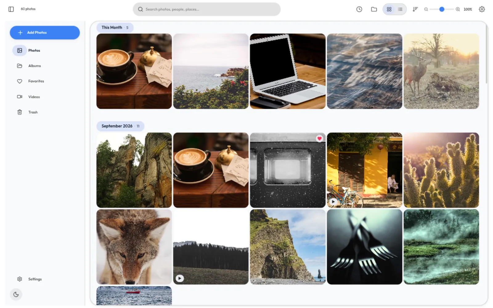
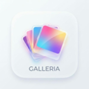
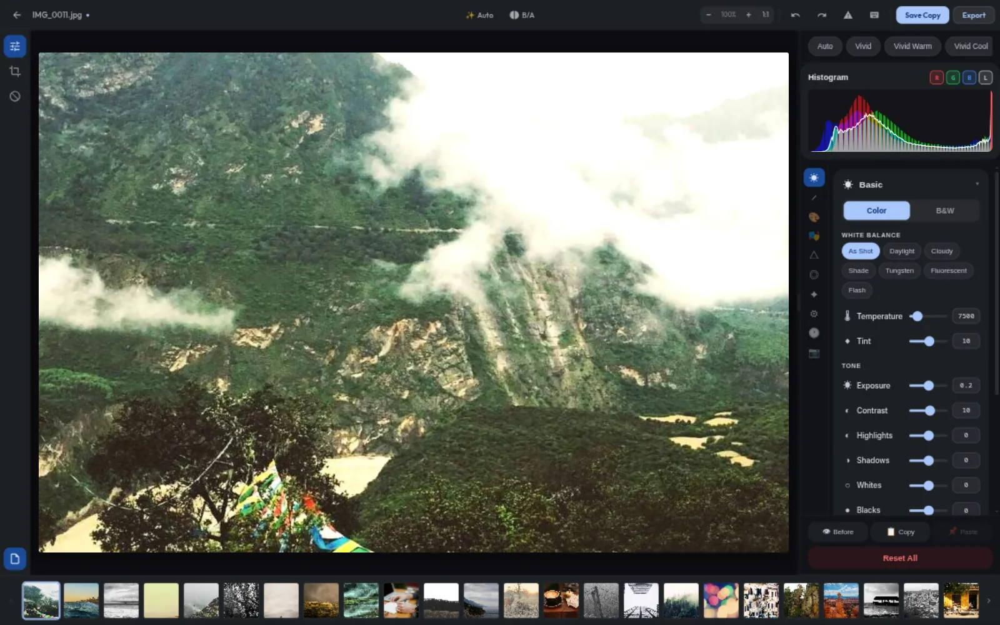

Sixty photos on screen at once — grouped by month, filtered by anything, real thumbnails for RAW and video alike.

GALLERIA·EXPRESSIVEMATERIAL 3 EXPRESSIVE · RUST + SVELTE · OFFLINE-FIRST
A desktop gallery that treats your photographs like an exhibition — and edits them like a darkroom. Scene-referred, GPU-rendered, and relentlessly offline.
( 01 ) PHILOSOPHY
Galleria sweeps through your folders, reads every EXIF heartbeat and lays your archive out like an exhibition — a Tetris mosaic where every aspect ratio belongs, grouped by month, searchable by anything.
NO CLOUD · NO ACCOUNTS · NO SUBSCRIPTION — IT INDEXES EVERYTHING AND PHONES NO ONE.
( 02 ) THE GALLERY
( 03 ) THE DEVELOP ENGINE
As of v0.15, edits run on LightCraft — an open-source, scene-referred develop engine. Every slider is 32-bit float maths in wide-gamut colour, pushed through wgpu and saved as settings. Your pixels stay yours.

Every edit is metadata — exposure, tone curves, the 8-band colour mixer, grading wheels, grain. Undo forever, snapshot anywhere, originals untouched.
DNG, CR2/CR3, NEF, ARW, RAF, ORF, RW2 and friends — demosaiced decodes, not JPEG stand-ins, with real RAW thumbnails in the gallery.
A linear Rec.2020 → OkLCh pipeline: Kelvin white balance, point & parametric curves, one-click auto tone from scene analysis.
Paint masks where they matter — lift a face, warm a skyline — without touching the rest of the frame.
Ratings, flags and develop settings live in XMP sidecars, so your edits ride along with the file — even outside Galleria.
Export JPEG, PNG, WebP or TIFF at full resolution through the same pipeline — written beside the original, never over it.
( 04 ) MATERIAL 3 EXPRESSIVE
The app ships five tonal palettes across true dark and light modes. So does this site: tap a swatch and watch the whole page re-theme itself, exactly like the app does.
DYNAMIC TONAL PALETTES — BUILT ON M3 COLOUR ROLES · TRUE DARK & LIGHT IN THE APP
( 05 ) THE STORY
“The main focus of this project was to learn.”
— THE ARCHITECT, ON WHY GALLERIA EXISTS
Galleria began as a student's question: can a local Linux app feel as fluid and cinematic as the modern web? The answer became a playground — Svelte 4's fine-grained reactivity (migrated from React, cutting the bundle by 83%), Rust's memory-safe systems programming behind a Tauri shell, and Material 3 Expressive as a design thesis.
AI drafts the code. A human reads every line, architects the system and ships the release — the education is the point. The latest milestone: XMP sidecar interop, a domain-store refactor and an accessibility baseline of zero warnings.